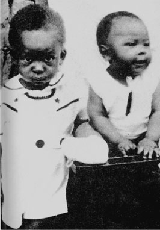
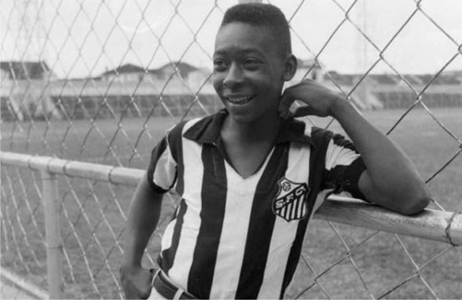
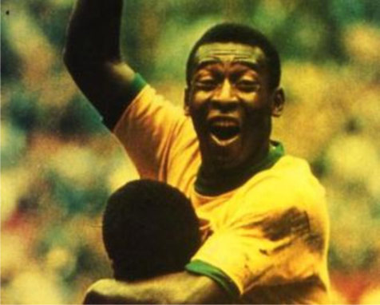
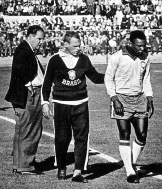
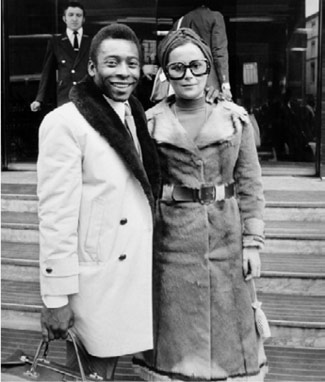
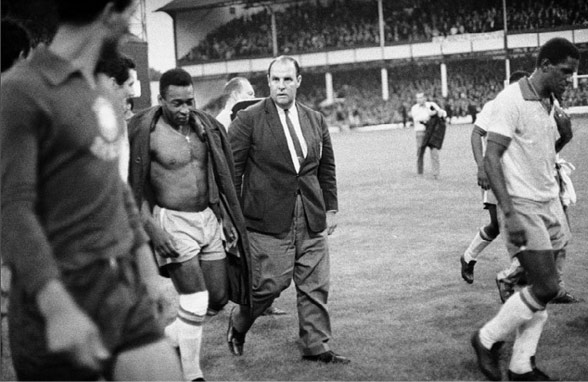
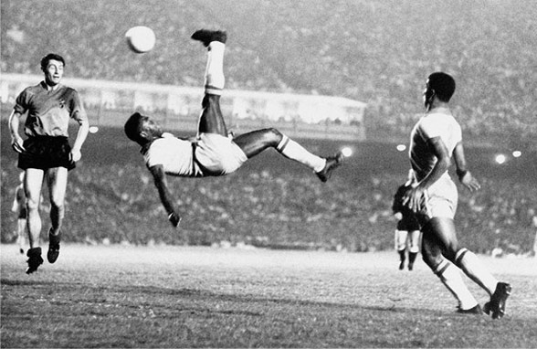
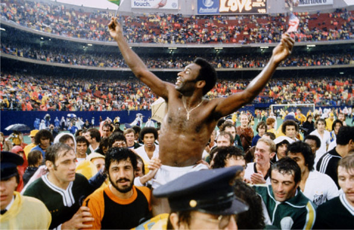
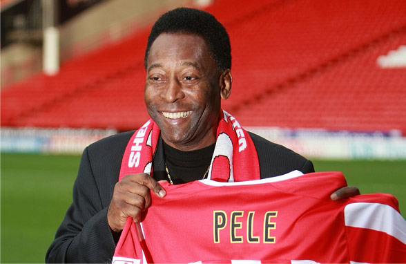

23rd October 1940
Edson Arantes do Nascimento, is born in Três
Corações, Minas Gerais, Brazil. His parents decided
to name him after the famous American inventor
Thomas Edison, but decided to drop the 'I'. He was
later called Pelé by schoolmates because of the way
he used to mispronounce the name of his favourite
player, goalkeeper of Vasco de Gama, Bilé.

1st January 1956
After proving his skills in a string of youth
championships, Pelé joins the Brazilian
National Football Team at the age of 16.

19th June 1958
At 17 years 249 days old, Pelé becomes the
youngest player to ever participate in a World Cup
Final match. He scores two goals in Brazil's 5-2
victory over the hosts, Sweden

1962
After assisting the first goal and scoring the second in Brazil’s opening match and
victory against Mexico at the FIFA World Cup in Chile, Pelé is injured and is forced
to sit out the rest of the tournament. Brazil go on to win nevertheless.

26th February 1966
Pelé marries Rosemeri dos Reis Cholbi. They divorce in 1982

1966
By now the most famous football player in the
world, Pelé was the recipient of savage fouls by
Bulgarian and Portuguese players in the first round,
which also saw Brazil eliminated.

1970
After initial reluctance, Pelé agrees to join the
Brazilian national team again. The result: what many
call the best football team of all time. He scores in
Brazil’s 4-1 victory in the final against Italy. He is
also investigated by Brazil’s military dictatorship for
alleged leftist leanings.

18th July 1971
Plays his last international game against Yugoslavia
in Rio de Janeiro.

December 2000
Pelé is named ‘FIFA Player of the Century’
alongside Maradona